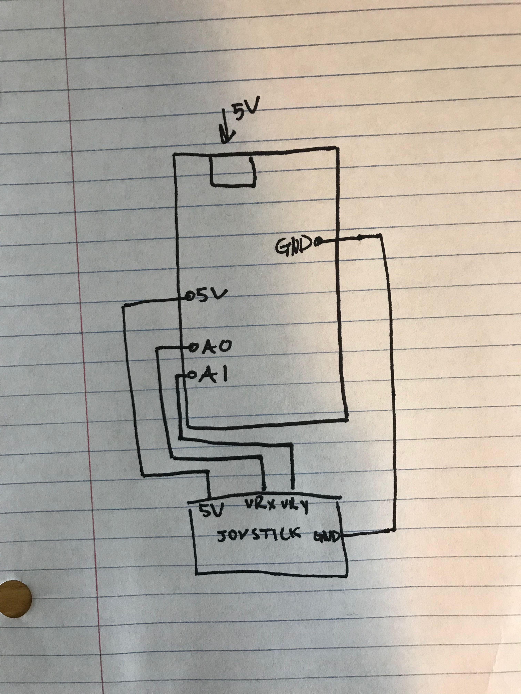
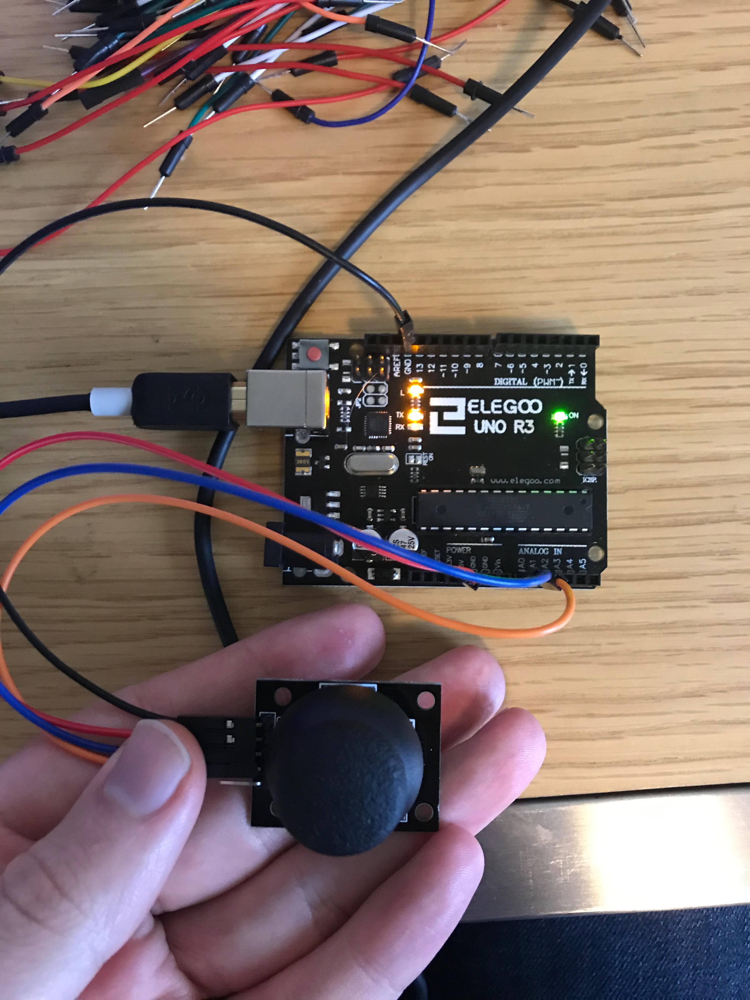

Ben's Assignment 6: Datalogging
Schematic

The schematic this week is very simple. I only needed to connect the joystick to the arduino. The VRx is connected to A0, and the VRy is connected to A1.
Circuit

Here is my circuit. I didn't need the bread board as I only utilized the joystick, and that has everything you need built into it.
Arduino Code Snippet
void setup() {
Serial.begin(9600); //initialize Serial
pinMode(A0, INPUT); //set A0 to input
pinMode(A1, INPUT); // set A1 to input
}
void loop() {
String x = String(analogRead(A0)); // read x value and convert to String
String y = String(analogRead(A1)); // read y value and convert to String
String whole = x + " " + y; //combine strings, separated by space
Serial.println(whole); //print it to serial
delay(50); //delay
}
Javascript Code Snippet
var serial; // variable to hold an instance of the serialport library
var portName = '/dev/cu.usbmodem14201'; //rename to the name of your port
var datain; //some data coming in over serial!
var xPos = 0;
var y;
var x;
var oldY;
var oldX;
function setup() {
serial = new p5.SerialPort(); // make a new instance of the serialport library
serial.on('list', printList); // set a callback function for the serialport list event
serial.on('connected', serverConnected); // callback for connecting to the server
serial.on('open', portOpen); // callback for the port opening
serial.on('data', serialEvent); // callback for when new data arrives
serial.on('error', serialError); // callback for errors
serial.on('close', portClose); // callback for the port closing
serial.list(); // list the serial ports
serial.open(portName); // open a serial port
createCanvas(1200, 800);
background(0x08, 0x16, 0x40);
}
// get the list of ports:
function printList(portList) {
// portList is an array of serial port names
for (var i = 0; i < portList.length; i++) {
// Display the list the console:
print(i + " " + portList[i]);
}
}
function serverConnected() {
print('connected to server.');
}
function portOpen() {
print('the serial port opened.')
}
function serialError(err) {
print('Something went wrong with the serial port. ' + err);
}
function portClose() {
print('The serial port closed.');
}
function serialEvent() {
if (serial.available()) {
//read from serial
datain = serial.readLine();
//x and y value is separated by a space, so split into array
var dataArray = datain.split(" ");
//turns x value into a number
x = Number(dataArray[0]);
//turns y value into a number
y = Number(dataArray[1]);
}
}
function graphData(x, y) {
// map the range of the input to the window height:
var yPos = map(y, 0, 1023, 0, height);
// map the range of the input to the window height:
var xPos = map(x, 0, 1023, 0, width)
//draw rectange in gold
fill(232,211,162);
//get rid of stroke
noStroke();
//draw new rectangle
rect(0,0, xPos, yPos);
// if there is a new size rectangle, erase the old one:
if (oldY != yPos || oldX != xPos) {
color("#4b2e83"); // sets the color to the background
rect(0,0,oldX,oldY); //creates the old rectange in the background color
// this takes away flashing, and erases the old rect
}
oldY = yPos;
oldX = xPos;
}
function draw() {
background('#4b2e83'); //sets background color
graphData(x, y); //pass in x and y value of rectangle
}
Here it is in Action!

When you move the joystick up or to the left, the rectangle gets smaller, and when you move the joystick down or to the right, the rectangle gets larger in its respective dimention. I mapped the x and y value from 0 to 1023 to 0 and the height or width to ensure that the rectangle can get as large as the window it is in.